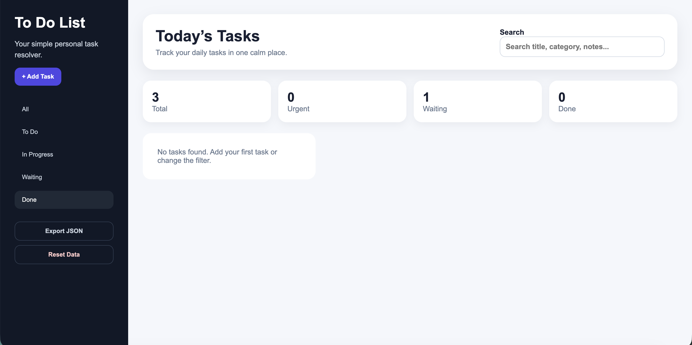

Mobile App · Productivity
To Do App
A mobile task management app designed to help users organize daily tasks through a clean and distraction-free interface.
Problem
Many task management apps become cluttered as users add more tasks, making it difficult to prioritize work and stay organized.
Goal
Create a simple experience that lets users quickly add, edit, complete, and manage tasks with minimal effort.
Design Solution
Designed a clean layout with clear visual hierarchy, intuitive navigation, large touch targets, and instant task completion to reduce cognitive load and improve usability.
My Role
Conducted competitive research, created wireframes, designed the interface, built interactive prototypes, and developed the responsive front end using HTML and CSS.
View Project